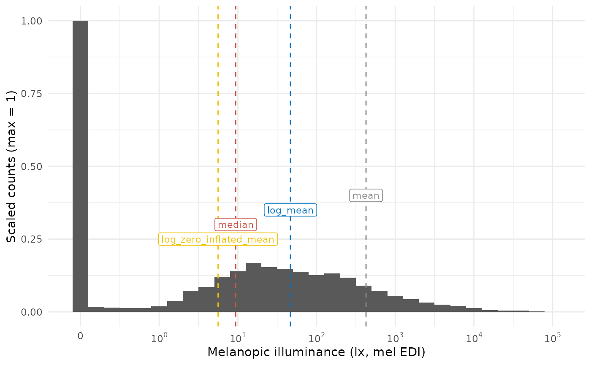
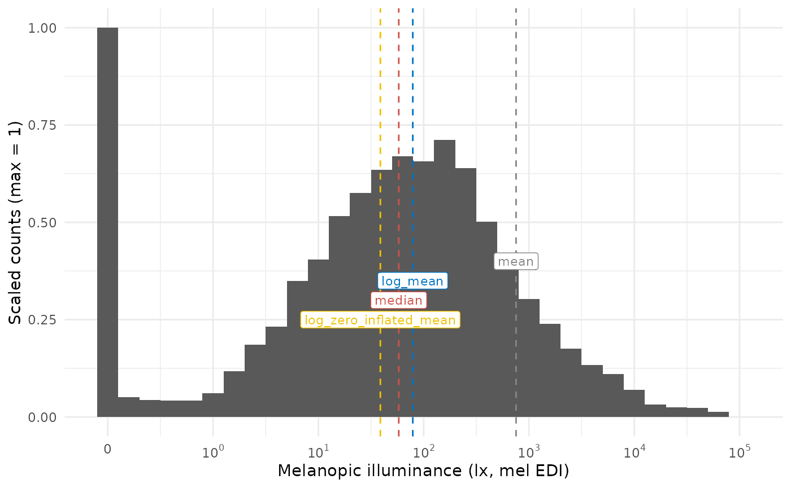

This article focuses on an important question when dealing with light exposure (and many other) important data: To log or not to log?. It is based on the article How to deal with darkness: Modelling and visualization of zero-inflated personal light exposure data on a logarithmic scale by Zauner et al. (2025). The article is currently in the proofing-stage, but the preprint can be found here.
Please note that this article uses the base pipe operator
|>. You need an R version equal to or greater than 4.1.0 to use it. If you are using an older version, you can replace it with themagrittrpipe operator%>%.
Importing Data
We will use data imported and cleaned already in the article Import & Cleaning.
#this assumes the data is in the cleaned_data folder in the working directory
data <- readRDS("cleaned_data/ll_data.rds")As can be seen by using gg_overview(), the dataset
contains 17 ids with one weeks worth of data each, and one to three
participants per week.
data |> gg_overview()
To log or not to log (transform)
Light exposure data (e.g., Illuminance, or melanopic EDI) is not normally distributed (see #. By their nature, their values are often highly skewed, and also overdispersed. Additionally, the data tend to show an excess of zero values (so called zero-inflation). The paper How to deal with darkness: Modelling and visualization of zero-inflated personal light exposure data on a logarithmic scale by Zauner et al. (2025) explores ways to deal with this.
For visualization, the symlog scale is excellent (see
symlog_trans()), which is the basis for all
LightLogR visualizations. For statistical modelling, the Tweedie
distribution is a good choice, as it can handle zero-inflation and
overdispersion. But how about when one simply wants an average across
portions of the dataset? In this case, the mean is not a good choice.
Even the median is affected by the zero-inflation. Log-transforming the
data removes zero values, which are a common occurance, thus is also
removes valuable information from the dataset. Zauner et al. summize
that adding a small, but not negligable value to a variable prior to
log-transformation is a good way to deal with this issue, also for
modelling. LightLogR has two functions to facilitate this:
log_zero_inflated() and exp_zero_inflated()
use a default offset of 0.1 and a logarithmic base of
10, but can be adjusted. The function
log_zero_inflated() is used to log-transform the data,
while exp_zero_inflated() is used to back-transform the
data. The functions are used in the following way:
#no transformation
data$MEDI |> mean()
#> [1] 425.6553
data$MEDI |> median()
#> [1] 9.39
#log-transformation
data$MEDI |> log() |> Filter(\(x) !is.infinite(x), x = _) |> mean() |> exp()
#> [1] 46.61243
#log_zero_inflated
data$MEDI |> log_zero_inflated() |> mean() |> exp_zero_inflated()
#> [1] 5.603959What do those values represent in the dataset? Let’s overlay them on a histogram
#creating a histogram function
MEDI_histogram <- function(data) {
#creating a dataset with the location parameters
locations <- tibble(
mean = data$MEDI |> mean(),
median = data$MEDI |> median(),
log_mean = data$MEDI |> log() |> Filter(\(x) !is.infinite(x), x = _) |> mean() |> exp(),
log_zero_inflated_mean = data$MEDI |> log_zero_inflated() |> mean() |> exp_zero_inflated()
) |> pivot_longer(cols = everything())
#creating the histogram
data |>
ggplot(aes(x = MEDI, y = after_stat(ncount))) +
geom_histogram(binwidth = 0.2) +
scale_x_continuous(trans = "symlog",
breaks = c(0, 10^(0:5)),
labels= expression(0,10^0,10^1, 10^2, 10^3, 10^4, 10^5)
) +
geom_vline(data = locations, aes(xintercept = value, color = name), linetype = "dashed") +
geom_label(data = locations, aes(x = value, y = c(0.4, 0.3, 0.35, 0.25), label = name, color = name),
size = 3) +
ggsci::scale_color_jco()+
guides(color = "none") +
labs(x = "Melanopic illuminance (lx, mel EDI)", y = "Scaled counts (max = 1)") +
theme_minimal()
}
MEDI_histogram(data)
It can be readily seen that the median and the log_zero_inflated mean lead to similar results, but are still different by almost a factor 2. The mean doesn’t represent anything well, and the log-transformed mean represents the “non-zero” part of the distribution quite well, as is to be expected. How does this look like when we only look at daytime values, which are expected to have fewer zero-lux values?
#looking only at daytime values of light exposure
day_data <-
data |>
add_photoperiod(c(48.5, 9)) |>
filter(photoperiod.state == "day")
MEDI_histogram(day_data)
In cases with fewer zero-values, the log-transformed mean and the log_zero_inflated mean are more similar, but still is 50% higher on the untransformed mel EDI level.
Summary
In cases with many zero values, the log_zero_inflated mean is arguably a better representation of the location parameter data, as is the median. The log_zero_inflated mean is also a good choice for modelling, as it is not affected by zero values. The difference to log transformed data becomes more pronounced as the number of zero values increases.
We generally recommend to either use the median or the log_zero_inflated mean for summaries of light exposure data.